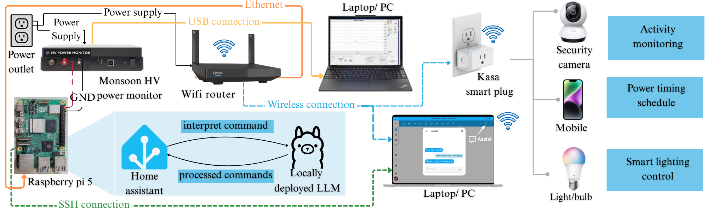
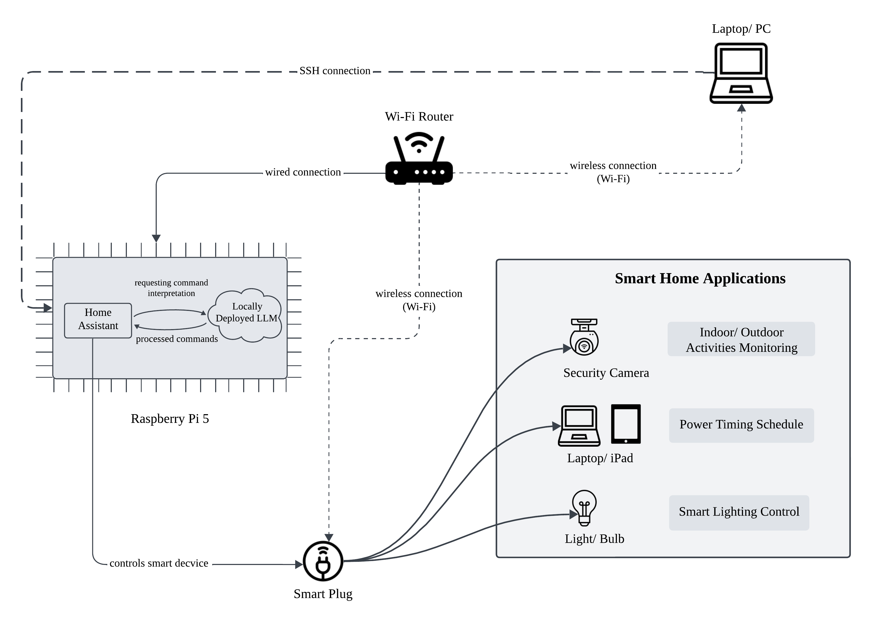

|
I am a first-year PhD student in Computer and
Information Sciences at Towson University, advised
by Prof. Yifan Guo. My research is primarily in
distributed machine learning, specifically making
federated learning efficient for resource constrained edge devices. Email / Github / Google Scholar / LinkedIn / CV |
Publications |
|
|
 |
How Energy is Consumed by LLM-enabled Smart Home Assistant Systems on
Low-Cost Devices: An Empirical Study
Krishna Sruthi Velaga, Anik Mallik, Yifan Guo IEEE CCNC, 2026 (accepted) |

|
Edge AI for Smart Cities: Foundations, Challenges, and
Opportunities
Krishna Sruthi Velaga, Yifan Guo, Wei Yu Smart Cities, 2025 [Paper] |
|
 |
Optimizing Large Language Models Assisted Smart Home Assistant Systems
at the Edge: An Empirical Study
Krishna Sruthi Velaga, Yifan Guo AAAI AI4WCN Workshop, 2025 |
Template credits: Jon Barron